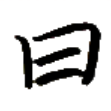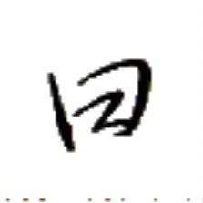
チェㇷ゚→ 【言】
[動詞] 言う、話す、語る
[節要求動詞] 〔疑問文を取って〕～するのかを言う
[名詞] 〔修飾語を伴って〕言語
言琴 チェㇷ゚→リアー→ 【言琴】
[名詞] パイグ人の芸能の一つ。観客には詩などの書かれた紙を持たせ、演奏と共に読むもの。演奏は詩などの一音節ごとの声調に合わせて弾かれることが特徴。
島言 ドㇷ゚→チェㇷ゚→ 【島言】
[名詞] 東島通商語
[名詞] 島の言語、島の公用語
再言 ティュ·チェㇷ゚→ 【再言】
[動詞] もう一度言う
[間投詞] もう一度言ってください
使多言一 ズイ→タウン→チェㇷ゚→エゥㇳ⤴ 【使多言一】
[名詞] 単一の燐字をパイグ語 2 単語以上を用いて読むこと
此故 カー→シㇳ⤴ 【此故】
[文接続詞] ゆえに
[文接続詞] なぜかというと
直後に原因が来る場合と、直後に結果が来る場合の両方があるため注意。
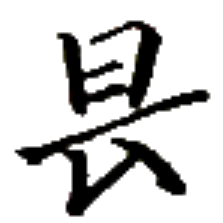
プㇳ· 【真】
[状態動詞] 真実である、正しい、正確である
[前置助動詞] 本当に、実際に
真綿之字 プㇳ·ホン→ア·マン→ 【真綿之字】
[名詞] 真に軽い音節
パイグ語の文法用語。中調であり末子音を持たないような音節を指し、これらの音節は基本的に機能語として振る舞う。
無真噫 ムン→プㇳ·ア· 【無真噫】
[間投詞] そうではありません
事務的に否定する場合に使う。日常的には無如其噫【無如其噫】などと言うことが多い。
 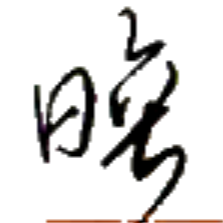
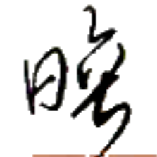
ヒオウ→ 【認】
[節要求動詞] ～であると認める
[節要求動詞] ～しても構わない
意之別字 シャー⤴ア·パウ→マン→ 【意之別字】
[名詞] 歴史的には同音/類音の単語を表していた字が、単語の意味の差に基づいて複数に分化するようになったもの
集意之字 ダㇳ⤴シャー⤴ア·マン→ 【集意之字】
[名詞] 会意文字、それぞれの構成要素の意味を合わせた文字
哩名 リㇷ゚·ズィン→ 【哩名】
[名詞] リパライン名、リパライン語名、アロアイェーレーム
 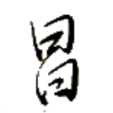
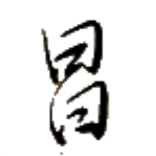
ツイ→ 【論】
[動詞] 論じる、議論する
[名詞] 理論、議論、論争
[接尾辞] ～学（学問名を作る）
皇論 タㇺ⤴ツイ→ 【皇論】
[名詞] タムツイ（宗教名）
タムを最高神とするアニミズム的宗教。
皇論之書 タㇺ⤴ツイ→ア·アㇰ→ 【皇論之書】
[名詞] タムツイの書
タムツイにおいて重要な教典。
字豊論貧 マン→ホウ→ツイ→ヘイ⤴ 【字豊論貧】
[四字熟語] 無駄に多種類の字や語を使っておきながら、伝えたい内容が薄いこと
リン王は、言語政策を成功させるべく『限られた文字種で万物を書くことが非常に優れており偉いことである』という考えを官民の間に広めて根づかせることに極めて力を注いでいたため、今なお燐字書記言語の伝統はそこに強く影響されている。ゆえに、燐字圏においては、燐字を 700 字知っていれば生活に支障をきたすことがないと言われている。
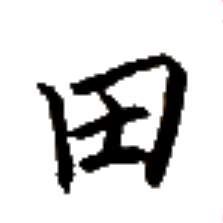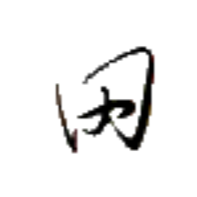
キアー→ 【日】
[時間詞] （暦の）日
[名詞] （ボードゲームの）ラウンド（最初の人の 1 回目の手番から、最後の人の 1 回目の手番まで）
[助数詞] ～日間、～日分
善日 カイㇳ→キアー· 【善日】
[間投詞] おはようございます、こんにちは
声調の変化に注意。
時値 カㇰ·マㇰ⤴ 【時値】
[名詞] （ボードゲームにおける）臨時点（なんらかの条件を満たしたときに得られる得点）
労時 ナイㇷ゚⤴カㇰ· 【労時】
[名詞] 労働時間
[時間詞] 労働時間中、働いている際
之下時 ア·ウㇳ⤴カㇰ· 【之下時】
[特殊接続詞＋時間詞] （～した）後、（～した）時
待声時 ティㇺ→スオㇷ゚⤴カㇰ· 【待声時】
[名詞] （パイグ語の文法用語）語境界や意味上の区切れを明示するために用いる発話中の無音区間
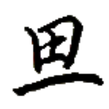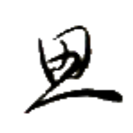
フㇳ⤴ 【始】
[動詞] 始まる、始める
[節要求動詞] ～し始める
[前置詞] ～から
[動詞] 〔場所を伴って〕～から移動する
 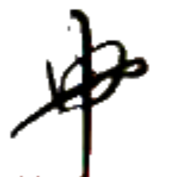
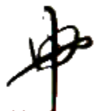
タㇺ⤴ 【皇】
[名詞] タム神（神を統率する神）、（セッカイクの）皇
[名詞] タム（人名）
皇処之将 タㇺ⤴ホエゥ·ア·ワイ→ 【皇処之将】
[名詞] 他人のために自分を犠牲にする人、良い上司
皇論 タㇺ⤴ツイ→ 【皇論】
[名詞] タムツイ（宗教名）
タムを最高神とするアニミズム的宗教。
皇論之書 タㇺ⤴ツイ→ア·アㇰ→ 【皇論之書】
[名詞] タムツイの書
タムツイにおいて重要な教典。
皇島 タㇺ⤴ドㇷ゚→ 【皇島】
[名詞] アタラン島（アイル共和国を構成する島の一つ）
皇月島 タㇺ⤴シェㇺ→ドㇷ゚→ 【皇月島】
[名詞] タムシエルミワ島（ヴェフィス共和国を構成する島の一つ）
撃皇 クㇳ⤴タㇺ⤴ 【撃皇】
[動詞] （セッカイクで）タムを踏み越える
[名詞] （セッカイクの減点役）タムの踏み越え
硬皇力 ペゥㇰ→タㇺ⤴ピュ· 【硬皇力】
[名詞] 強い皇効（セッカイクのルール変種のひとつ）
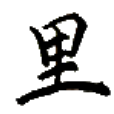
タン→ 【南】
[名詞] 南、暖かい方向、日が最も高くにあるときの方向
向こうの世界において、「暖かい方向」と「日が昇るところの方向」の相対的な位置関係は、日本などの地球の北半球とは逆である。この辞書で採用している漢字転写では、「暖かい方向」を表す 南 を【南】、「日が昇るところの方向」を表す 東 を【東】と表記している。
ユㇳ⤴ 【輪】
[名詞] 輪、リング
[名詞] リング状の宝飾品
[名詞] ユト（人名）


 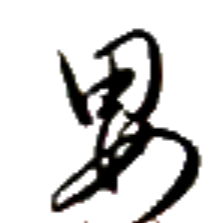
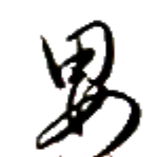


 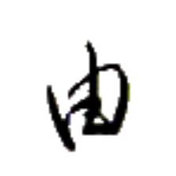
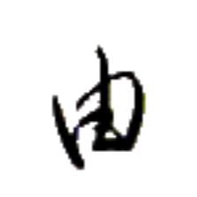